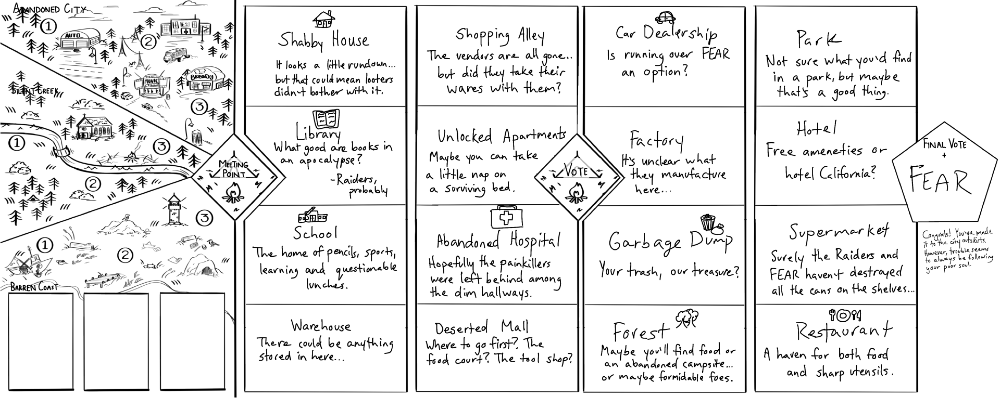
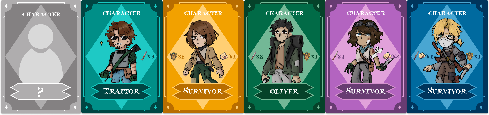
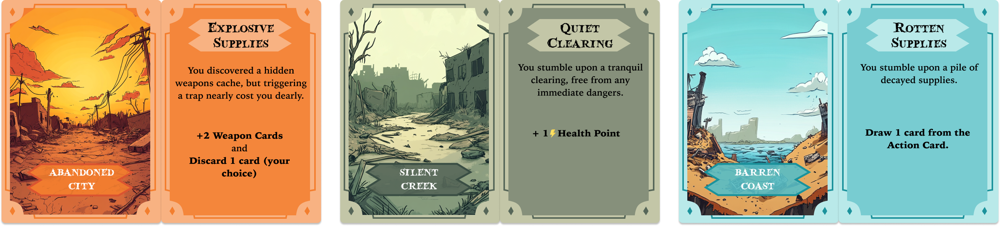
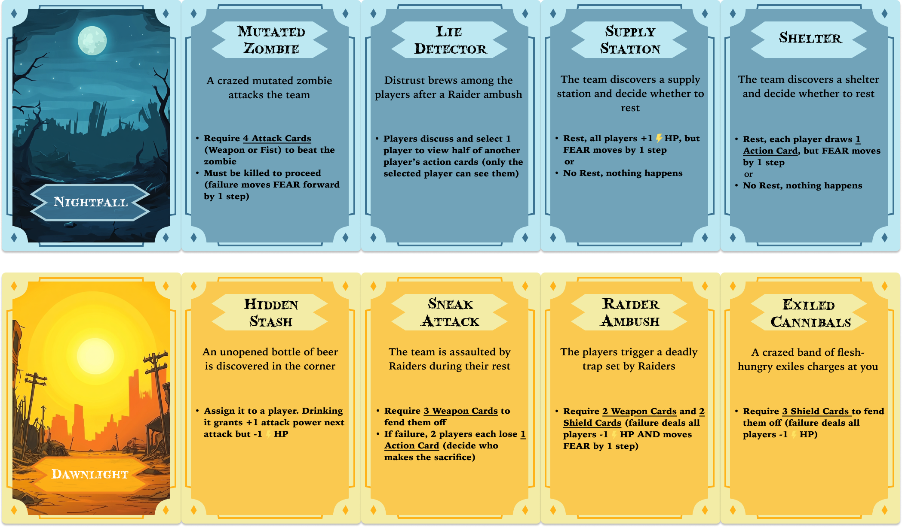
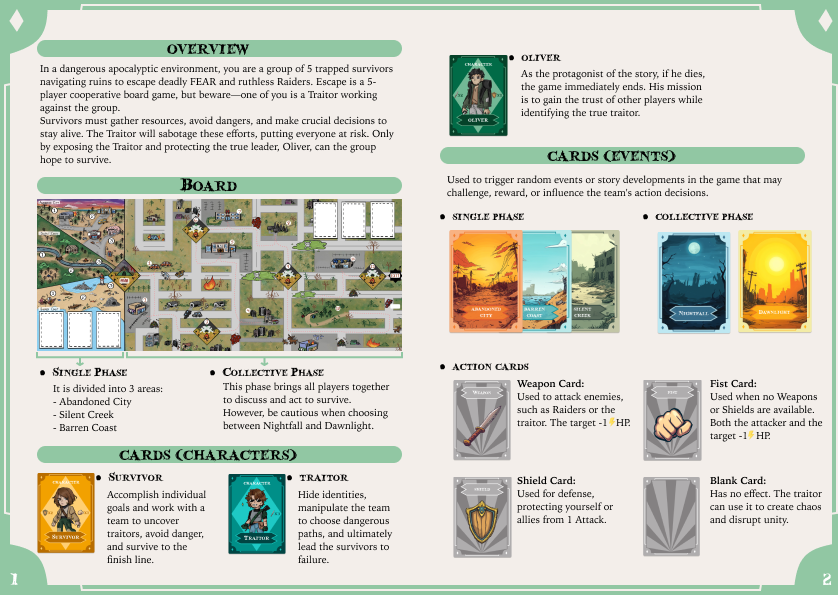
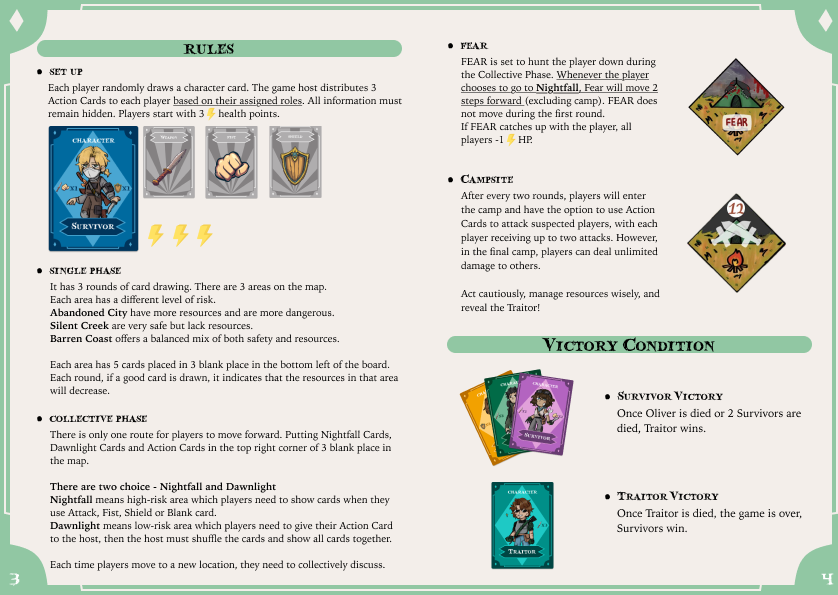
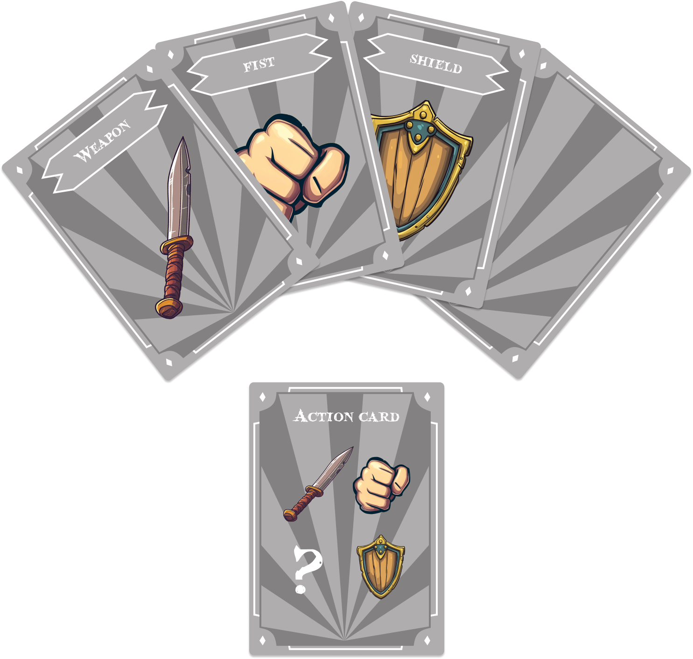

Goal 项目目标
Adapt the post-apocalyptic script Redemption into a board game by translating its tension and internal conflict into card systems, route-based map design, hidden roles, and cooperative play. 将末世题材剧本《救赎》改编为多人桌游，通过卡牌系统、路线式地图设计、隐藏身份与合作玩法，把原作中的紧张氛围与人物冲突转化为可游玩的体验。
Showcase 展示视频
01 Description 01 项目简介
Escape is a 4-5 player hidden-traitor survival board game adapted from my original post-apocalyptic script Redemption. Players take on the roles of Oliver and his team as they travel across three major zones—Abandoned City, Silent Creek, and Barren Coast—while managing limited supplies, unstable trust, and the looming threat of the monster “FEAR”. 《逃离》是一款由我原创末世剧本《救赎》改编而来的 4-5 人隐藏叛徒生存桌游。玩家将扮演 Oliver 及其队友，穿越废弃之城、寂静溪流与荒芜海岸三大区域，在资源匮乏、信任脆弱，以及怪物 “FEAR” 持续威胁的环境下求生。 The experience is divided into a Solo Phase and a Collective Phase: players first gather resources independently, then regroup to make high-stakes decisions while trying to identify the hidden traitor within the team. A Day / Night cycle further sharpens the game's risk-reward structure, turning every route choice and accusation into a tense negotiation between survival and betrayal. 游戏体验分为单人路线与集体路线两个阶段：玩家先独自行动收集资源，再重新集结，在团队中隐藏叛徒的前提下做出高风险决策。昼夜循环机制进一步强化了游戏的风险与收益权衡，让每一次路线选择与指控都变成生存与背叛之间的紧张博弈。
02 Project Lead 02 项目管理
As project lead, I was responsible for translating script from a linear narrative into a cohesive tabletop experience. I defined the target audience, player experience goals, and production direction, then coordinated workflow, communication, and visual output so every discipline aligned with the same emotional arc of survival. 作为项目负责人，我负责将线性叙事的剧本转化为一个完整且统一的桌面游戏体验。我定义了目标玩家、体验目标与制作方向，并统筹流程、沟通和视觉产出，确保团队各个环节都服务于同一条“末世生存”的情绪主线。
My Work 我的工作
VISION — 愿景定位 —
Defined the emotional direction and target audience so the team could align around a shared design goal. 定义项目的情绪方向与目标玩家，确保团队始终围绕统一的设计目标推进。
PIPELINE — 管线流程 —
Planned phases, milestones, and ownership to keep design, writing, and visual production moving in sync. 规划项目阶段、里程碑与分工，让设计、文本与视觉制作保持同步推进。
EXPERIENCE — 体验设计 —
Shaped the at-table experience and coordinated visuals so the components remain intuitive during high-pressure play. 统筹桌面体验与视觉呈现，确保组件在高压对局中依然易于摆放、读取与使用。
Details 具体内容
— VISION — 愿景定位
I established Escape as a 4-5 player hidden-traitor survival game designed to feel tense rather than exhausting. I set the target playtime, difficulty level, emotional beats, and audience, then used those constraints to guide decisions across rules, layout, and visual direction. This helped prevent scope creep and kept every iteration anchored to the core fantasy of post-apocalyptic survival. 我将《逃离》定位为一款 4-5 人、强调紧张感而非疲劳感的隐藏叛徒生存游戏。我设定了目标时长、难度、情绪节奏与受众，并以这些约束指导规则、版式和视觉方向上的所有决策，从而避免范围失控，让每一轮迭代都始终围绕“末世生存”这一核心体验展开。
— PIPELINE — 管线流程
To keep the team efficient, I split the project into clear phases: concept development, early prototype, refined prototype, and final production. For each phase, I assigned ownership across rules, narrative, visual assets, and layout, while setting up check-ins and task tracking to keep everyone aligned with upcoming playtests and deliverables. 为了保证团队协作效率，我将项目拆分为概念阶段、初期原型、优化原型和最终成品四个阶段。每个阶段都明确分配规则、叙事、视觉资源与版式设计的责任人，并通过定期同步与任务管理，确保团队始终围绕下一次测试与交付目标推进。
— EXPERIENCE — 体验设计
I designed the full at-table flow, from setup order and onboarding sequence to the quick-reference elements that remain visible during play. This included grouping components, simplifying iconography, and rewriting rules into clearer player-facing language so new players could reach meaningful decisions quickly. I also acted as a bridge between game design and art production, turning mechanical requirements into clear briefs and actionable feedback. 我设计了完整的桌面流程，从开箱与摆台顺序，到对局中持续可见的速查信息都进行了梳理。这包括组件分组、图标简化，以及将复杂规则改写为更清晰的玩家语言，让新玩家能更快进入有意义的决策。我同时也承担了设计与美术之间的衔接工作，把机制需求转化为明确的制作说明和可执行反馈。
03 Systems & Narrative 03 系统与叙事
As lead game designer, I was responsible for the rules, content, and balancing that make Escape feel tense and coherent at the table. I built the phase structure, role interactions, economy, and threat pacing so that scarcity, mistrust, and fear emerge directly from the systems rather than relying only on narrative flavour. 作为游戏的主策划，我负责构建让《逃离》在桌面上成立的核心规则、内容与数值平衡。我设计了阶段结构、角色互动、资源经济与威胁节奏，使资源稀缺、不信任与恐惧感能够直接从系统中自然产生，而不只是停留在叙事文本层面。

My Work 我的工作
CORE SYSTEMS — 核心系统 —
Designed the Solo / Collective Phase structure, turn flow, and Day / Night layer. 设计单人/集体双阶段结构、回合流程，以及昼夜机制层。
ROLES DESIGN — 角色设计 —
Created five playable roles and defined the hidden-role lineup and character abilities. 设计五个可玩角色，明确隐藏身份配置与各角色能力。
RESOURCE — 资源机制 —
Built the resource economy, regional risk structure, and “FEAR” pursuit logic. 构建资源经济、区域风险结构，以及 “FEAR” 的追击逻辑。
CARD CONTENT — 卡牌内容 —
Wrote and designed 40 cards, then iterated their effects and numbers through playtesting. 编写并设计 40 张卡牌内容，并通过测试持续迭代其效果与数值。
Details 具体内容
— CORE SYSTEMS — 核心系统
I defined how the Solo Phase and Collective Phase operate, how turns resolve, and how players progress through Abandoned City, Silent Creek, and Barren Coast. On top of that, I designed the Day / Night system: Night actions offer stronger rewards but increase danger and information exposure, while Day actions are safer but slower. 我明确了单人路线与集体路线的运行方式、回合结算逻辑，以及玩家在废弃之城、寂静溪流和荒芜海岸中的推进方式。同时，我设计了昼夜机制：夜间行动收益更高，但危险与信息暴露也更大；白天行动则更安全，但推进节奏较慢。 Together, these systems make every round a trade-off between progress, safety, and the risk of revealing too much. 这些系统共同作用，使每一轮都变成进度、安全与信息暴露之间的权衡。
— ROLES DESIGN — 角色设计
I created the full role lineup—including Oliver, multiple Survivor types, and the Traitor—defining their abilities, limitations, and influence on combat, voting, and information flow. 我设计了完整的角色阵容，包括 Oliver、不同类型的幸存者以及叛徒，并明确他们在战斗、投票与信息流中的能力、限制与作用。 The hidden-role structure was tuned to keep suspicion active and make each play session feel like its own emergent version of the story. 隐藏身份结构经过调整，以持续维持玩家之间的怀疑关系，让每一局都像是这个故事的一次动态演化版本。
— RESOURCE — 资源机制
I built the underlying risk-reward economy around: 我构建了底层的风险—收益经济系统，重点包括：
- How many resources each route can yield. 不同路线可产出的资源数量。
- How danger escalates across each zone. 各区域中危险如何逐步升级。
- How campsites and bonfire points function mechanically. 营地与篝火点在机制中的具体作用。
I also designed the “FEAR” pursuit rules so the monster creates constant pressure without fully hard-locking the group, forcing players to keep moving while still debating whom to trust and when to act against a suspected traitor. 我还设计了 “FEAR” 的追击规则，使它在持续施压的同时不会完全锁死团队行动，迫使玩家一边推进，一边不断争论该信任谁、又该在何时对可疑对象采取行动。
— CARD CONTENT — 卡牌内容
I wrote and designed the event, action, and character cards so that each effect serves a clear gameplay purpose—resource swing, ambush, sabotage, or desperate opportunity, while reinforcing the post-apocalyptic tone. 我编写并设计了事件卡、行动卡与角色卡，让每个效果都具备明确的玩法功能，例如资源波动、伏击、破坏或孤注一掷的机会，同时持续强化末世题材的整体氛围。 Through iterative playtesting, I adjusted probabilities, damage values, and win / loss thresholds to keep both the survivors and the traitor competitively viable. 通过多轮测试，我不断调整触发概率、伤害数值以及胜负阈值，确保幸存者阵营与叛徒阵营都具备可成立的对抗性。




Going Further 更多内容
Additional Info 补充说明
04 Rulebook 04 规则书
A four-page rulebook that I wrote and laid out, covering the game overview, board structure, character roles, event cards, “FEAR” rules, and victory conditions. The layout uses colour-coded sections, icon support, and examples so new players can understand the game through the booklet alone. 这是一本由我撰写并排版的四页规则书，内容涵盖游戏概览、棋盘结构、角色设定、事件卡、“FEAR” 规则以及胜利条件。整体版式通过颜色分区、图标辅助与示例说明，让新玩家仅通过阅读手册也能快速理解游戏。


05 Action Cards 05 行动卡
A compact set of icon-based Action Cards—Weapon, Fist, Shield, and Blank—used to resolve campsite conflicts. I designed this card set to keep combat readable at a glance while still allowing players to bluff, predict, and combine actions strategically. 这是一组用于解决营地冲突的图标化行动卡，包括武器、拳头、盾牌与空白四种类型。我设计这套卡牌的目标，是在保持战斗信息一眼可读的同时，依然让玩家能够进行虚张声势、判断对手并组合策略。

Reflection 项目反思
Designing from Script to Table 从剧本到桌面的设计转化
From script themes to tabletop layout, Escape taught me to treat every element as part of one continuous player experience. As project lead, I realised how much early planning matters—target playtime, emotional arc, and player count quietly shape later decisions, from which mechanics to cut to how the rulebook should communicate. 从剧本主题到桌面版式，《逃离》让我意识到每一个设计环节都属于同一条连续的玩家体验。作为项目负责人，我更深刻地理解了前期规划的重要性——目标时长、情绪曲线与玩家人数，都会在后续潜移默化地影响机制取舍与规则表达方式。 As lead designer, I also expanded into level structure and immersive worldbuilding, making sure narrative and systems reinforced each other. While tuning the “FEAR” mechanic, routes, roles, and card effects, I learned that hidden-role games live or die on information clarity: only when players truly understand the risks can tension fully emerge at the table. 作为项目组长，我也进一步参与到关卡结构与沉浸式世界构建中，确保叙事与系统能够彼此支撑。在调试 “FEAR” 机制、路线、角色与卡牌效果的过程中，我也认识到：隐藏身份游戏的成败很大程度上取决于信息是否清晰，只有当玩家真正理解风险时，桌面上的紧张感才会成立。
Next Steps for 《逃离》 Escape 迭代展望
If I continue developing Escape or lead a similar project in the future, I want to improve both the iteration loop and validation methods. On the systems side, I would explore additional role variants, alternative “FEAR” behaviours, and campaign-style scenarios while building a clearer structure of core rules plus modular expansions, allowing the game to scale in complexity without overwhelming new players. 如果未来继续开发《逃离》，或带领类似项目，我希望进一步优化迭代流程与验证方法。在系统层面，我想尝试更多角色变体、不同的 “FEAR” 行为模式，以及战役式情境，同时建立更清晰的“核心规则 + 模块拓展”结构，让游戏在提升复杂度的同时，依然不会压垮新玩家的理解成本。